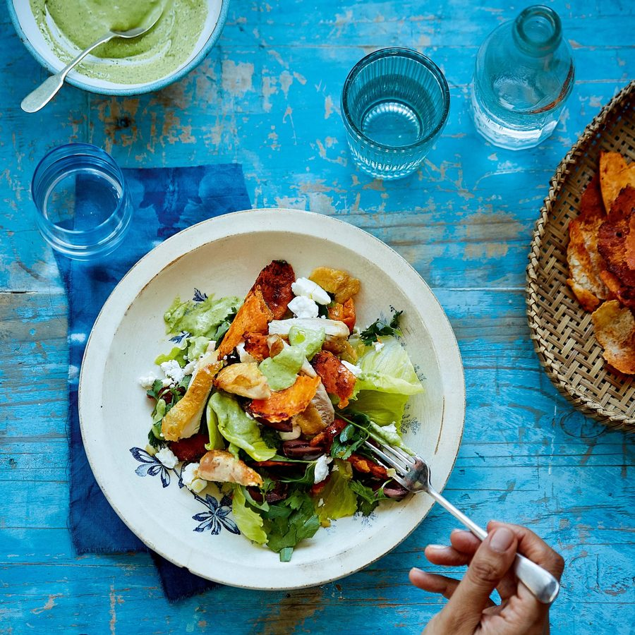

Roast chicken salad with chicken-fat croutons and green tahini dressing

Think of this salad as a sort of north African take on a caesar salad. What makes it extra special is the punchy herb-laced tahini dressing and the chicken fat and harissa flatbread croutons – it’s worth cooking it just for those.
For the dressing
Heat the oven to 170C fan/gas mark 5.
Season the chicken generously with salt and pepper. Heat 1 tablespoon of the olive oil in a large ovenproof cast-iron frying pan over medium heat. Add the chicken, skin side down, and cook without moving for 8 minutes or until golden brown and crisp. Turn the chicken and cook for another 8 minutes until it is browned on the other side. Remove the chicken with tongs and put on a plate. Add the harissa to the chicken fat and juices in the pan, along with another 2 tablespoons of the olive oil, and swirl around so the harissa amalgamates with the oil.
Toss the flatbread into the pan, tossing it through the juices. Put the chicken back in the pan and roast in the oven for 15 minutes until it is cooked through and the flatbread croutons are golden brown and crisp.
Meanwhile, make the dressing. Place the parsley and coriander in a blender, along with the garlic, lemon juice and tahini, and whiz to a smooth paste. With the blender running, drizzle in the extra virgin olive oil. Transfer to a bowl and then fold in the yoghurt. Season to taste with salt and pepper.
Place the lettuce, herbs and preserved lemon on a platter and dress with some of the green tahini dressing. Crumble over the feta and scatter with the olives. Drizzle over the remaining 3 tablespoons of olive oil.
Remove the chicken from the oven and let it rest for a few minutes, then slice it off the bone and place on top of the salad, along with the croutons. Serve with more dressing on the side.